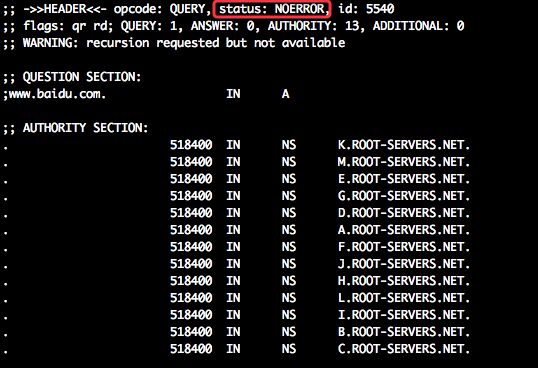
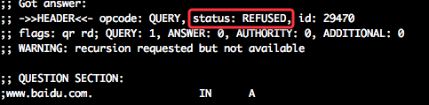

在近期的Golang项目中遇到过类似这样的报错信息：lookup www.baidu.com on 10.10.100.1:53 no such host. 本篇就来说说golang中域名解析遇到的问题。
其中，10.10.100.1为公司内部的bind域名解析服务器。这个可是我编译上线版本，出这种问题我着实捏把汗。 这部分代码没改动，那肯定是golang的问题，早前同事遇到过类似问题，说Golang的1.4版本就没有这个问题。的确我用的是1.5版本的Go，于是立即用1.4编译后重新上线。
两种解析方式
网上说Go在1.5版本中使用两种解析方式：
- 纯Go语言实现的域名解析，从/etc/resolve.conf中取出本地dns地址列表，然后发送DNS请求并获得结果；
- 使用cgo方式，最终会调用到c标准库的getaddrinfo或getnameinfo
为何采用两种方式？ 因为Go在1.4与1.5的默认调用方式是不一样的，1.4版本中默认使用的是cgo的方式解析，在1.5版本中默认使用纯Go的域名解析。如果使用cgo的方式，则对于一个协程调用cgo的getAddrInfo方法，会阻塞一个系统线程；而GO得域名解析，只会消耗一个协程。所以在1.5以后版本中默认使用纯Go的解析。
Go的net包中有这么一段注释（src/net/net.go）：
Limit the number of concurrent cgo-using goroutines, because each will block an entire operating system thread. The usual culprit is resolving many DNS names in separate goroutines but the DNS server is not responding. Then the many lookups each use a different thread, and the system or the program runs out of threads.
大致意思就是上面讲的一样。
那么问题来了，为啥使用Go的解析方式反而报错？暂时没有办法，只能看Go的相关代码了。
纯Go的域名解析方式
在业务代码中，调用的是 lookupHost() 函数，逐步跟踪，会调用到后续的tryOneName()。下面简要描述该函数的信息：
tryOneName(conf, fqdn, qtype) //对所需解析的域名，依次使用 /etc/resolve.conf 中的DNS IP解析
|---exchange(server, name, qtype, timeout) //DNS请求(建立连接、dns报文格式封装、发送dns请求、获取请求)
|---writeDNSQuery
|---readDNSQuery
|---answer(name, server, msg, qtype) //解析获取到dns信息，解析出CNAME/A记录
|---判断是否符合条件
if err == nil || msg.rcode == dnsRcodeSuccess || msg.rcode == dnsRcodeNameError && msg.recursion_available {
return cname, rrs, err
}
Go的域名解析就是通过读取/etc/resolve.conf的dns server, 然后通过DNS的解析流程，依次获取记录，如果首个dns server返回失败，则选第二个dns server，依次进行。 如果首个dns server解析成功了（dnsRcodeSuccess），则解析就算成功。
线上环境的 /etc/resolve.conf 为：
10.10.100.11
8.8.8.8
114.114.114.114
在tryOneName()中加打印信息，确实能在内部dns server中返回成功。
那么问题来了，是内网的dns server出问题了？ 但是内网大家用的都是正常的啊。问题在哪里呢？
Bind域名解析器
内网的dns解析使用的bind，为了模拟线上的Bind，我也装了一个dns服务，且配置与内网的相同。options部分如下：
options {
allow-query { any; };
allow-query-cache { any; };
recursion yes;
allow-recursion { none; };
version "gaint-d1";
}
内网配置很纳闷。既然允许递归，但是允许递归的白名单(allow-recursion为none),实际上还是不允许递归的。关键就在allow-query-cache这个字段了。如果关闭(设置为none)或者不设置这个字段，Go解析尽然正常了；否则上述方式，Go解析不到主机。
开启allow-query-cache， dig了一下，发现返回的错误码是NOERROR，且返回一串root dns server的信息； 而关闭该字段，则返回REFUSE. 这就是关键了，该字段是起缓存作用。

开启allow-query-cache

不开启allow-query-cache
如果缓存中没有所需查询的域名记录信息，则会将root dns server的信息返回（相当于告诉你，去rootserver查询吧）；否则表示没查到，返回查询失败。
解决方案
问题是找到了，那基于目前的怎么解决呢？
- 修改内网的bind配置，去掉
allow-query-cache（这个运维负责人表示不干，万一影响其他服务的域名解析呢？） - 回退Go的版本，线上一律使用1.4版本（这个不就体验不到1.5以上的版本性能了么）
- 仍然使用1.5版本编译，在编译之前添加：
export GODEBUG=netdns=cgo(目前折中方案就是这条了)